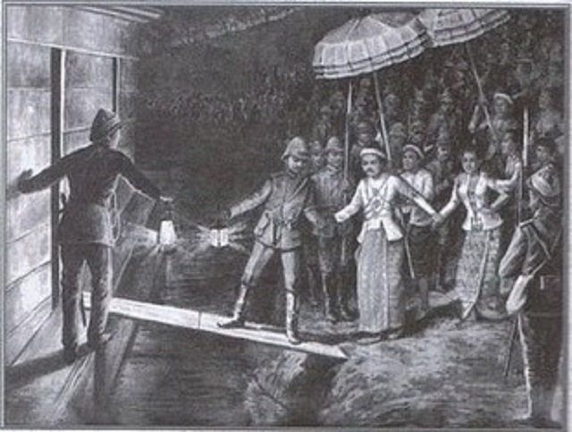

About Myanmar
Historically known as Burma, the origins of the people of Myanmar can be traced to the Indo-Aryans who first settled the area in the 7th century BC and Mongolians who invaded the region under Khan in the 13th century AD, which some English influence added in during the British Empire era. The Kingdom of Pagan was the first unified version of Burma to be created by King Anawratha. The kingdom reached its height of power in the 11th-13th centuries AD and is attributed for volume of religious structures in Bagan. This empire is then conquered by the Mongolians, who control the region until the mid-16th century. In the early 17th century, the British East India Company sent representatives into Burma attempting to establish trading posts along the Bay of Bengal, and met with firm opposition by the Burmese people. Not easily defeated, the British continued their efforts which led to the Anglo-Burmese War in 1824-1826. Eventually Burma would be annexed into British India and become a separate colony by 1937.
British rule in Myanmar(Burma)British rule in Burma lasted from 1824 to 1948, from the successive three Anglo-Burmese wars through the creation of Burma as a province of British India to the establishment of an independently administered colony, and finally independence. The region under British control was known as British Burma. After the independence from British colony the Japenese occupied Burma for a time , but were later thrust from power with the help of British forces through the help of Aung San in exchange for the country’s independence. In 1948, Burma officially became its own sovereign nation. Members of Aung San’s political party are assassinated and an affiliated leader, U Nu, is appointed to lead the country. Various factions continue to vie for control of the country. The following is a brief timeline of key events since Myanmar’s independence. Those on a Myanmar tour may hear common reference to some of these figures, particularly to Aung San Suu Kyi, daughter of Aung San and current leader of the NLD, the party holding the vast majority of seats in parliament. |
 |

Post-independence Burma (1948–1962)The first fourteen years of post-independence Burma were marred by several communist and ethnic insurgencies. Prominent insurgent groups during this period include the Communist Party of Burma (CPB, "white flags") led by Thakin Than Tun, the Communist Party (Burma) ("red flags") led by Thakin Soe, the People's Volunteer Organisation (Yèbaw Hpyu) led by Bo La Yaung (a member of the Thirty Comrades), the Revolutionary Burma Army (RBA) led by communist officers Bo Zeya, Bo Yan Aung and Bo Yè Htut (all three of them members of the Thirty Comrades), and the Karen National Union (KNU). |
History of Post-independence(Burma)Remote areas of northern Burma were for many years controlled by an army of Kuomintang (KMT) forces after the Communist victory in China in 1949. Burma accepted foreign assistance in rebuilding the country in these early years, but continued American support for the Chinese Nationalist military presence in Burma finally resulted in the country rejecting most foreign aid, refusing to join the Southeast Asia Treaty Organisation (SEATO) and supporting the Bandung Conference of 1955. Burma generally strove to be impartial in world affairs and was one of the first countries in the world to recognise Israel and China. By 1958, the country was largely beginning to recover economically, but was beginning to fall apart politically due to a split in the Anti-Fascist People's Freedom League (AFPFL) into two factions, one led by Thakins Nu and Tin, the other by Ba Swe and Kyaw Nyein. This was despite the unexpected success of U Nu's "Arms for Democracy" offer taken up by U Seinda in Arakan, the Pa'O, some Mon and Shan groups, but more significantly by the PVO surrendering their arms. The situation became very unstable in parliament, with U Nu surviving a no-confidence vote only with the support of the opposition National United Front (NUF), believed to have "crypto-communists" amongst them. Army hardliners now saw the 'threat' of the CPB coming to an agreement with U Nu through the NUF, and in the end U Nu "invited" Army Chief of Staff General Ne Win to take over the country. Over 400 "communist sympathisers" were arrested, of which 153 were deported to the Coco Islands in the Andaman Sea. Among them was the NUF leader Aung Than, older brother of Aung San. The Botataung, Kyemon and Rangoon Daily were also closed down. Ne Win's caretaker government successfully stabilised the situation and paved the way for new general elections in 1960 that returned U Nu's Union Party with a large majority. The situation did not remain stable for long, when the Shan Federal Movement, started by Nyaung Shwe Sawbwa Sao Shwe Thaik (the first President of independent Burma 1948–1952) and aspiring to a "loose" federation, was seen as a separatist movement insisting on the government honouring the right to secession in ten years provided for by the 1947 Constitution. Ne Win had already succeeded in stripping the Shan Sawbwas of their feudal powers in exchange for comfortable pensions for life in 1959. He staged a coup d'état on 2 March 1962, arrested U Nu, Sao Shwe Thaik and several others, and declared a socialist state run by the Union Revolutionary Council (URC), which consisted of senior military officers. Sao Shwe Thaik's son, Sao Mye Thaik, was shot dead in what was generally described as a "bloodless" coup. Thibaw Sawbwa Sao Kya Seng also disappeared mysteriously after being stopped at a checkpoint near Taunggyi. The URC later founded the Burma Socialist Programme Party (BSPP) on 4 July 1962 to nominally separate the powers of the military from the government and to lead a one-party state. |
Military rule in Myanmar (also known as Burma) lasted from 1962 to 2011 and resumed in 2021. Myanmar gained its independence from the British Empire in 1948 under the Burmese Independence Army, as a democratic nation. The first military rule began in 1958 and direct military rule started when Ne Win captured power through a coup d'état in 1962. Burma became a military dictatorship under the Burma Socialist Programme Party that lasted for 26 years, under the claim to save the country from disintegration. During this period there was some democratic landscape in the form of giving rights to the citizen to elect and to stand for election.
The coup on 2 March 1962 led to the end of democratic form of government and the beginning of direct military rule in Myanmar up to 1974. During the period of military rule under General Ne Win, the country was shaped into one-party socialist state under the army led party called as Burma Socialist Programme Party (BSPP) till 1988. And the year from 1962 to 1988, can be marked as the era of Ne Win. The period from 1962-1988 can be divided into two phases. The first phase is the period of direct military rule from 1962-1974 and Constitutional Dictatorship phase from 1974 to 1988. In 2011, the military junta was officially dissolved, following a 2010 general election, and a nominally civilian government was installed.
In February 2021, the Tatmadaw detained State Counsellor Aung San Suu Kyi, President Win Myint, and other government leaders. They then proceeded to take control of the government, and instituted a one-year state of emergency, with Burma’s Commander-in-chief of the armed forces, Min Aung Hlaing, as the leader of the country, serving as the Chairman of the State Administrative Council, who has taken on a new title as prime minister of a newly formed caretaker government.
5726 Thiri Mingalar Ave, Bet. 78th & 35th Str. Mandalay 05031
Tel: 09 794 910 763
shineminmaung@edusnschool.co.uk